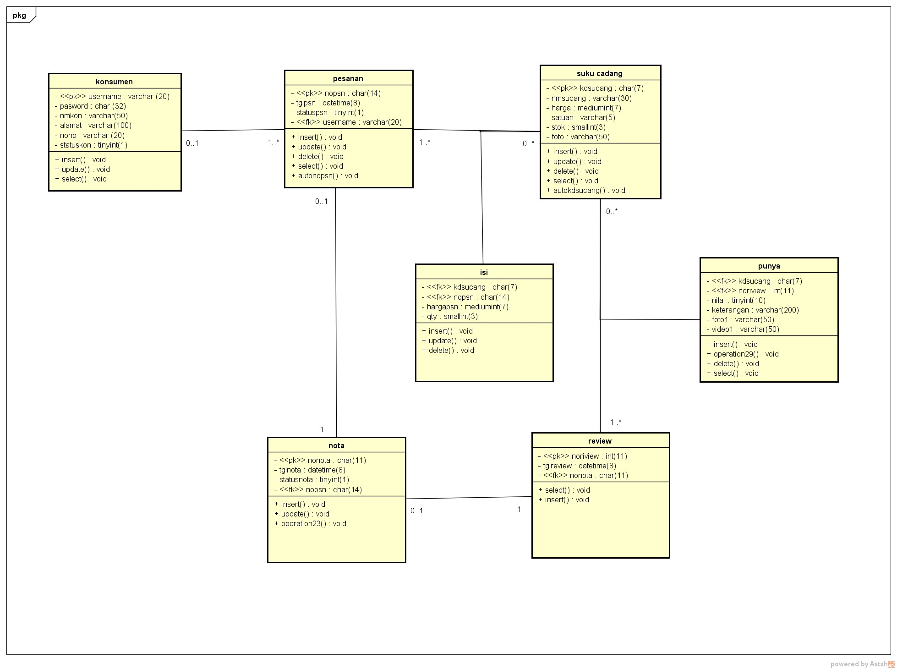

Nama = Ebi Sandiwa
Nim = 1811500113
Kelompok = TI6J
Hasil saya menyadur pada pertemuan ke 6:
1) Perhitungan nilai kehadiran untuk setiap pertemuan dengan membuat file index.html di setiap direktori pada repisotary di github
2) Membuat file berupa kesimpulan bernama index.html untuk nilai tugas
3) file tersebut dalam bentuk gambar latihan Astah dan link ke file .asta
4) Membuat class diagram dengan menggunakan astah
CONTOH CLASS DIAGRAM YANG SAYA BUAT

Download file latihan astah disini